Individualreisen,was wir speziell für Sie maßgeschneidert!
Individuell gestaltete Reisen versprechen einzigartige Erlebnisse und maßgeschneiderte Abenteuer. Von exklusiven Unterkünften bis hin zu persönlichen Reiserouten ermöglichen sie die Entdeckung von Orten, die den eigenen Interessen und Vorlieben entsprechen. Diese Art des Reisens erlaubt eine tiefere Verbindung mit Kultur, Natur und lokaler Bevölkerung, und schafft unvergessliche Erinnerungen, die auf die individuellen Wünsche zugeschnitten sind.Wir bieten jetzt maßgeschneiderte Reisedienste für Europa, Asien und Ozeanien an. Ein Klick auf die unten stehenden Inhalte kann Ihnen vielleicht Inspiration geben und die Auswahl Ihres Reiseziels erleichtern.
1
2
3
4
Europa

Stadt
Europas Städte fesseln mit Altmodischem und Modernem, prachtvoller Architektur und pulsierendem Leben. Enge Gässchen, imposante Denkmäler und gemütliche Cafés formen ein einzigartiges Flair. Kulturelle Vielfalt, historischer Zauber und zeitgenössische Energie verschmelzen zu einem unwiderstehlichen Charme.

Dorf
Europas ländliche Idylle bezaubert mit malerischen Landschaften, urigen Dörfern und einer entschleunigten Atmosphäre. Historische Fachwerkhäuser, sanfte Hügel und üppige Natur vermitteln ein Gefühl von Frieden und Gelassenheit. Traditionen, lokale Küche und herzliche Menschen schaffen eine einladende Umgebung. Hier findet man Ruhe und echte Verbindung zur Natur.

See
Europas Gewässer faszinieren mit ihrer Vielfalt: von den sanften Stränden des Mittelmeers bis zu den majestätischen Fjorden des Nordens. Flüsse durchziehen historische Städte, Kanäle verbinden malerische Dörfer. Segeln, Schwimmen und Wassersport bieten Erholung und Abenteuer. Die Wasserlandschaften sind Zeugen von Geschichte und Naturschönheit, die fesselnd und unvergesslich sind.

Wald
Europas Wälder verzaubern mit mystischer Schönheit und einer reichen Vielfalt an Flora und Fauna. Von dichten Buchenwäldern bis zu nebligen Nadelwäldern bieten sie Rückzugsorte der Stille. Wandern, Tierbeobachtung und Erholung in unberührter Natur sind hier möglich. Die Wälder bewahren Geheimnisse und laden dazu ein, die Verbindung zur Natur zu spüren.
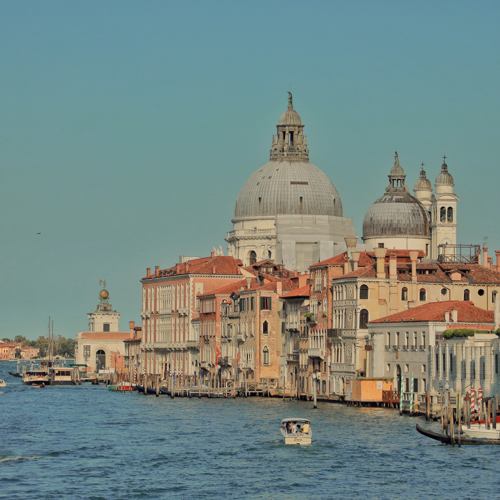
Kultur
Die europäische Kultur beeindruckt durch ihre faszinierende Vielfalt und historische Tiefe. Von den Meisterwerken der Renaissance bis zur Avantgarde der Moderne spiegelt sie künstlerischen Reichtum wider. Sprachen, Bräuche und kulinarische Genüsse variieren von Land zu Land und schaffen eine bunte Palette an Traditionen. Die europäische Kultur öffnet Türen zu einer Welt voller Geschichten, die Vergangenheit und Gegenwart miteinander verbinden und zum Nachdenken anregen.

Cuisine
Die europäische Küche bezaubert durch ihre kulinarische Vielfalt und Raffinesse. Von der exquisiten französischen Haute Cuisine bis zur herzhaften italienischen Pasta, jeder Bissen ist eine Reise durch Geschmack und Tradition. Regionale Zutaten und alte Rezepte vermählen sich zu unverwechselbaren Aromen. Märkte voller frischer Produkte, gemütliche Cafés und elegante Restaurants laden ein, die Sinne zu verwöhnen. Europäische Speisen sind ein Fest für Gaumen und Seele.
Asien
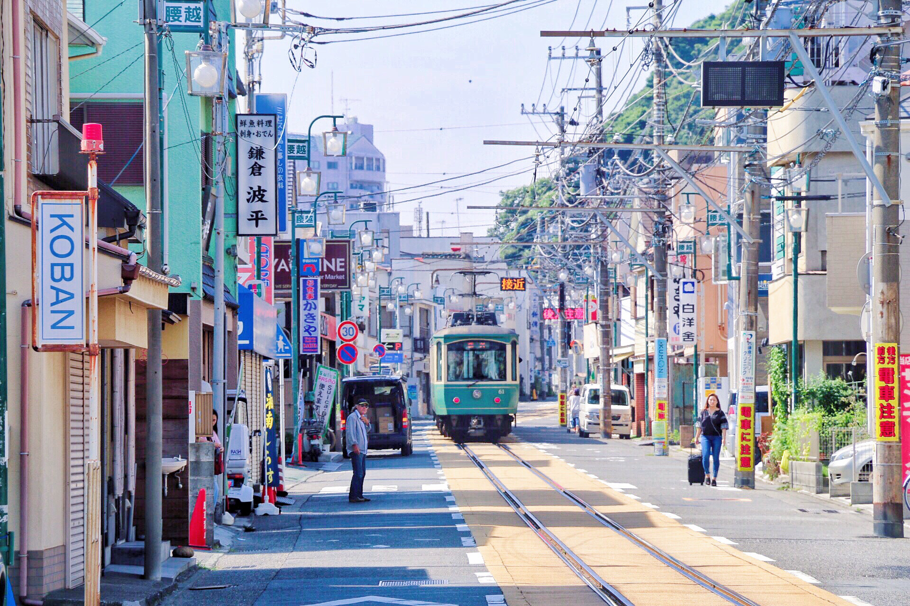
Stadt
Asien's Städte faszinieren mit ihrer fesselnden Mischung aus Tradition und Innovation. Von den modernen Hochhäusern in Tokio bis zu den antiken Tempeln in Bangkok, sie bieten ein Kaleidoskop von Kulturen und Lebensstilen. Straßenmärkte, prächtige Paläste und pulsierende Straßen spiegeln die Dynamik wider. Die exotische Küche, die Gastfreundschaft und die Vielfalt machen Asiens Städte unwiderstehlich.
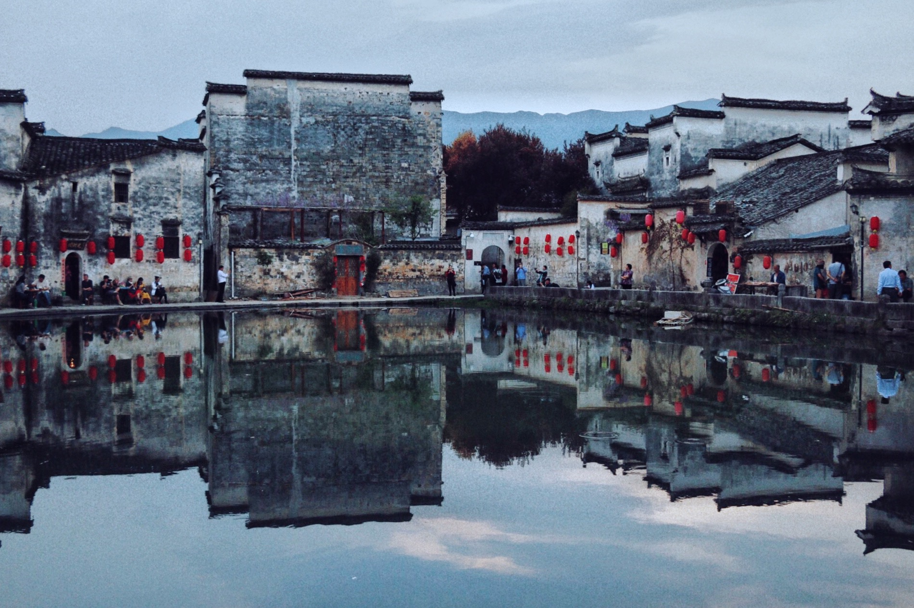
Dorf
Asiens ländliche Gebiete bezaubern mit ihrer unberührten Schönheit und authentischem Charme. Von den terrassierten Reisfeldern in Bali bis zu den ruhigen Dörfern in Bhutan bieten sie eine Flucht aus dem Trubel. Traditionelle Lebensweisen, gastfreundliche Gemeinschaften und ein tiefer Bezug zur Natur prägen die Atmosphäre. Asiens ländliche Idylle ist ein Ort der Entschleunigung und des kulturellen Erbes.
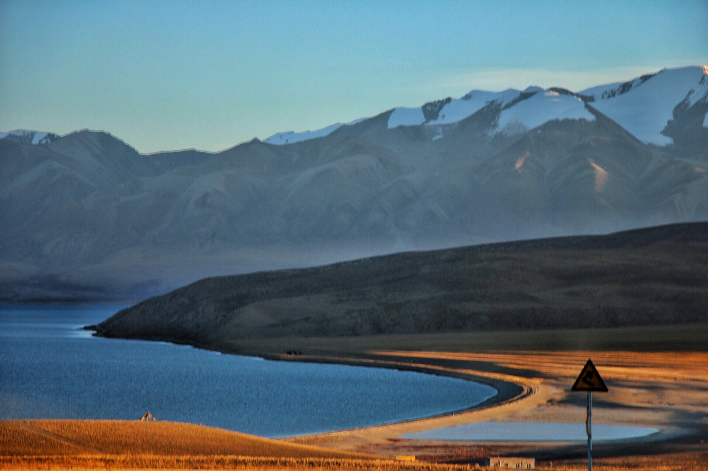
See
Asiens Meere fesseln mit ihrer überwältigenden Pracht und vielfältigen Naturwundern. Von den azurblauen Gewässern der Malediven bis zu den tosenden Wellen vor Japans Küste bieten sie eine Palette von Erfahrungen. Korallenriffe, exotische Fischvielfalt und abgelegene Inseln schaffen ein Paradies für Taucher und Naturfreunde. Asiens Ozeane sind eine unermessliche Quelle der Erhabenheit und Erholung.
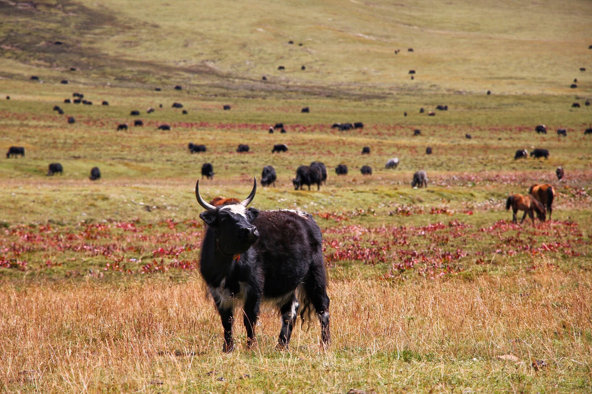
Grasland
Asiens Graslandschaften faszinieren mit endloser Weite und unberührter Wildnis. Von den windgepeitschten Steppen der Mongolei bis zu den sanften Hügeln der Kaschmir-Region bieten sie einzigartige Ökosysteme. Nomadische Kulturen, wilde Tiere und der Himmel voller Sterne prägen die Szenerie. Die Ruhe, die Weite und die Verbindung zur Natur machen Asiens Graslandschaften fesselnd.
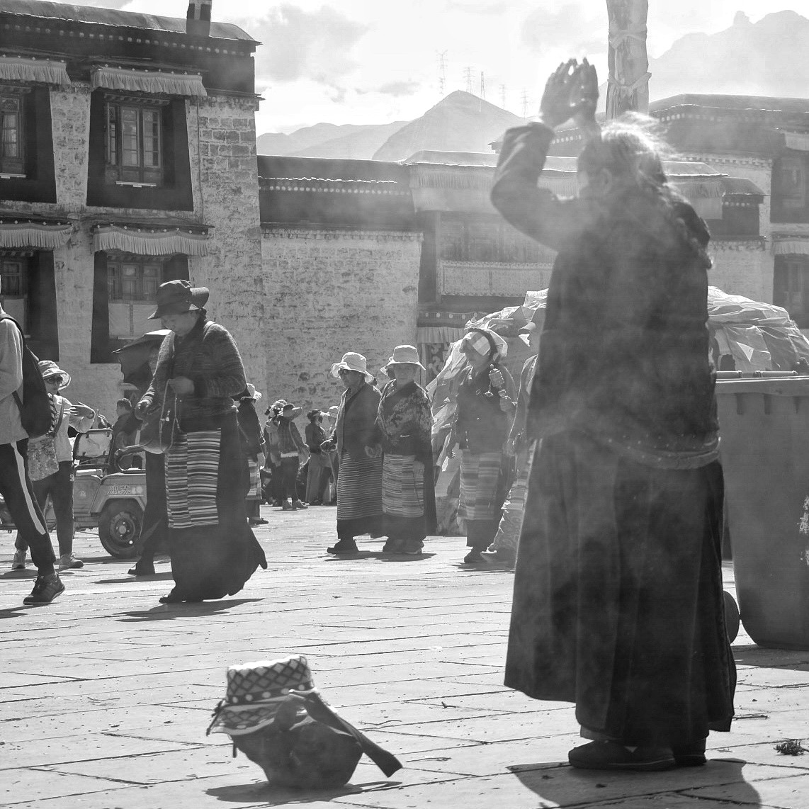
Kultur
Asiens faszinierende Kulturen sind ein Kaleidoskop der Vielfalt, das Tradition und Innovation harmonisch vereint. Von den farbenfrohen Festivals Indiens bis zur meditativen Ästhetik Japans spiegelt sie jahrhundertealte Weisheit wider. Kulinarische Köstlichkeiten, ehrwürdige Bräuche und die Verehrung der Vorfahren prägen das soziale Gefüge. Asiens Kultur zeugt von tiefer Verbundenheit zur Geschichte, Spiritualität und dem Wunsch nach einem ausgewogenen Leben.
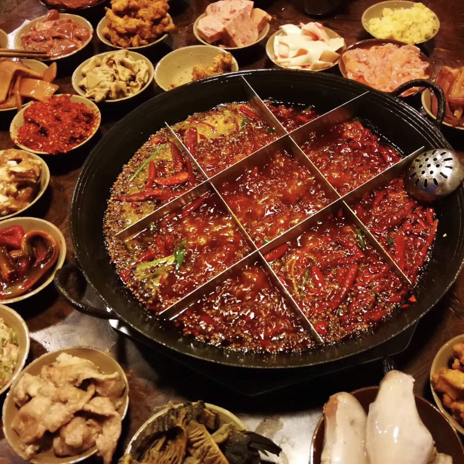
Cuisine
Asiens kulinarische Szene begeistert mit einem reichen Spektrum an Geschmacksrichtungen und Aromen. Von den scharfen Aromen Thailands bis zur subtilen Raffinesse der japanischen Küche bietet sie ein Fest für die Sinne. Straßenstände, Garküchen und elegante Restaurants präsentieren eine Fülle von Gerichten. Die Verwendung frischer Zutaten, die Kunst der Zubereitung und die kulturelle Vielfalt machen Asiens Küche unwiderstehlich.
Ozianien
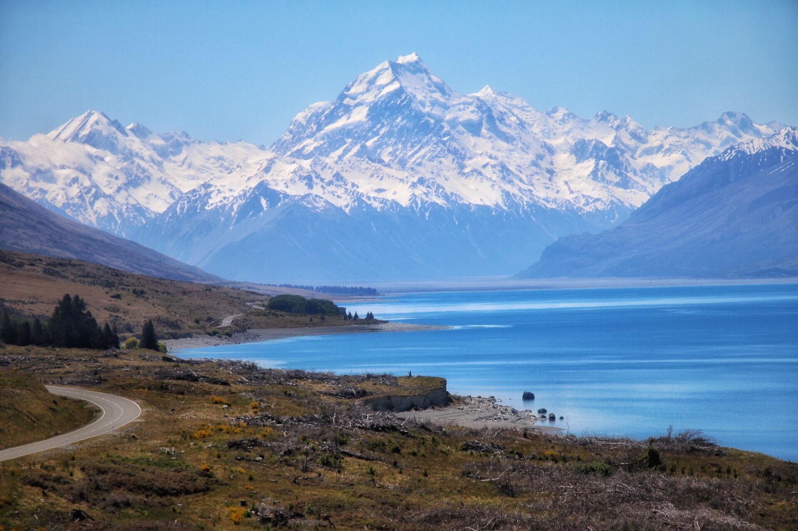
Berg
Ozeaniens Landschaften faszinieren mit atemberaubender Schönheit. Von Neuseelands majestätischen Alpen bis zu den tropischen Regenwäldern in Australien bieten sie vielfältige Panoramen. Vulkane, glitzernde Seen und endlose Strände prägen die Szenerie. Die Verbindung zur Ureinwohnerkultur und die einzigartige Tierwelt machen Ozeaniens Natur unwiderstehlich.
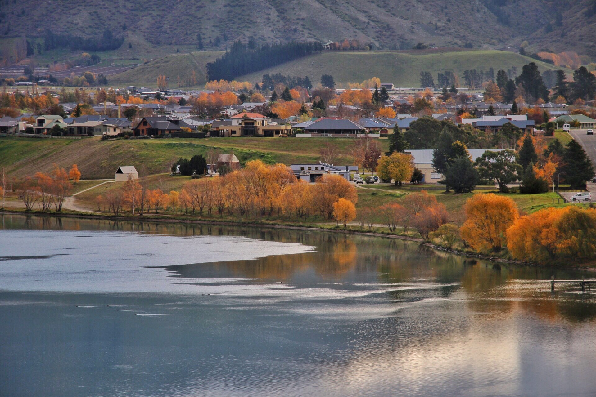
Dorf
Ozeaniens Dörfer bezaubern mit ihrer abgeschiedenen Schönheit und entspannten Atmosphäre. Von den traditionellen Maori-Dörfern Neuseelands bis zu den idyllischen Inselsiedlungen in der Südsee strahlen sie Authentizität aus. Einheimische Kulturen, palmengesäumte Strände und die einfache Lebensweise prägen den Charme. Ozeaniens Dörfer sind Orte der Ruhe und des Eintauchens in lokale Traditionen.
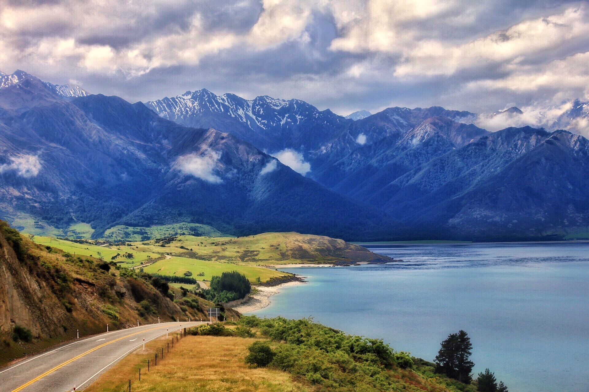
See
Ozeaniens Seen verzaubern mit ihrer unberührten Schönheit und stillen Gelassenheit. Von den kristallklaren Seen Neuseelands bis zu den geheimnisvollen Lagunen der Südsee bieten sie vielfältige Landschaften. Umgeben von Naturwundern und oft von kultureller Bedeutung, strahlen sie Ruhe und Harmonie aus. Ozeaniens Seen sind Orte der Erholung und der natürlichen Pracht.
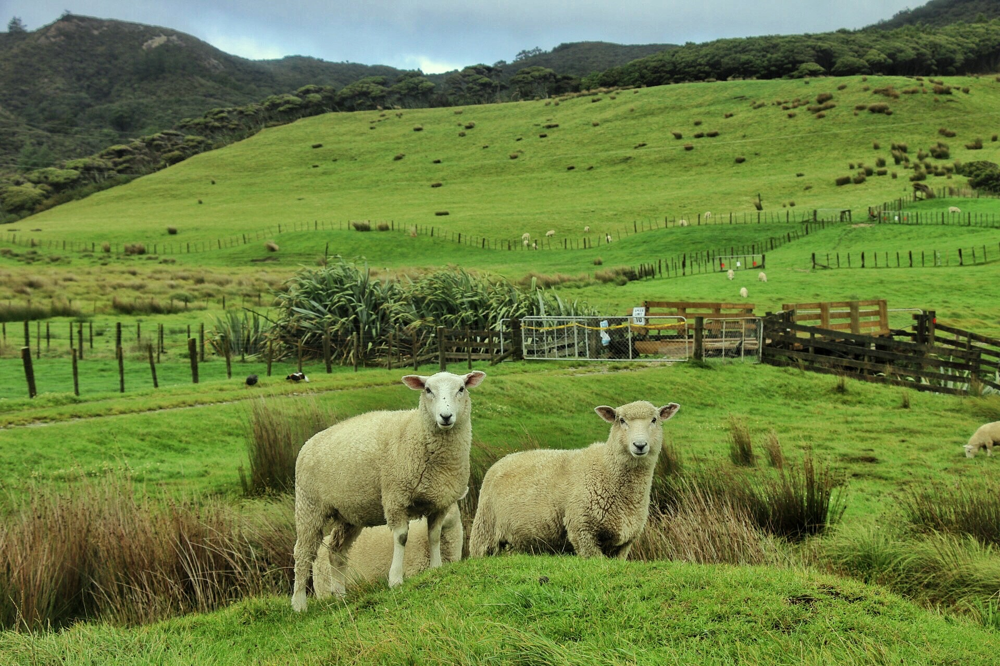
Wiese
Ozeaniens Graslandschaften verzaubern mit ihrer weitläufigen Schönheit und natürlichen Pracht. Von den sanften Hügeln Neuseelands bis zu den offenen Ebenen Australiens bieten sie malerische Ausblicke. Weidende Tiere, einzigartige Pflanzen und eine beruhigende Atmosphäre prägen die Szenerie. Die Verbindung zur Natur und die unendliche Weite machen Ozeaniens Graslandschaften fesselnd.
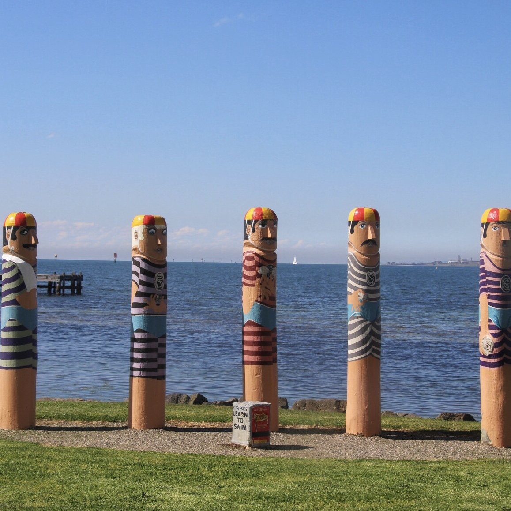
Kultur
Ozeaniens Kulturen strahlen mit einer tiefen Verbindung zur Natur und den Vorfahren. Von den reichen Mythen der Maori bis zu den spirituellen Traditionen der Aborigines spiegeln sie Jahrtausende altes Wissen wider. Kunsthandwerk, Tänze und Musik erzählen Geschichten von Land und Leben. Die enge Bindung zur Umwelt und die Wertschätzung von Gemeinschaft machen Ozeaniens Kultur faszinierend und inspirierend.
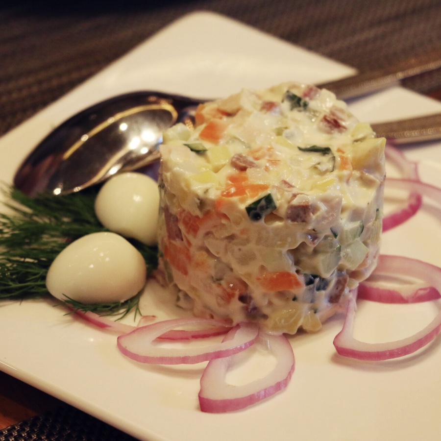
Cuisine
Ozeaniens kulinarische Vielfalt verzaubert mit einer Mischung aus regionalen Aromen und frischen Zutaten. Von den exotischen Früchten der tropischen Inseln bis zu den herzhaften Gerichten der Outback-Küche Australiens bieten sie unvergessliche Geschmackserlebnisse. Einheimische Delikatessen, inspiriert von Jahrtausende alten Traditionen, spiegeln die Verbindung zur Natur wider. Ozeaniens kulinarische Welt ist ein köstliches Abenteuer, das die Sinne begeistert.
Sonstiges

Diese Webseite befindet sich derzeit im Aufbau.
Wir bitten um Ihr Verständnis und freuen uns auf Ihre Geduld!